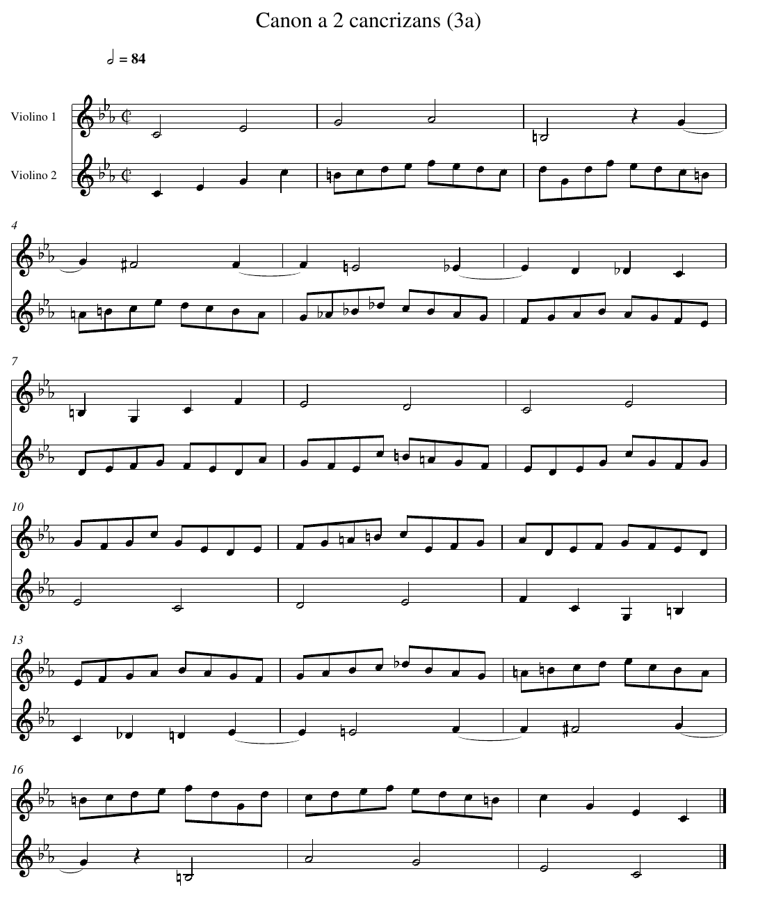

Le canon à l'écrevisse
En construction
Cette activité est en cours d'écriture : son contenu peut encore changer.
En 1747, Jean-Sébastien Bach rend visite au roi de Prusse Frédéric II, à Potsdam. Le roi lui donne un thème et lui demande d'improviser dessus. De retour chez lui, Bach compose sur ce thème tout un recueil, l'Offrande musicale, qu'il envoie au roi.
Le recueil contient une pièce étrange, le Canon a 2 cancrizans. Bach n'y a écrit qu'une seule ligne de musique. Pour la jouer, il faut deux musiciens : l'un lit la ligne du début à la fin, l'autre la lit de la fin au début, et les deux jouent en même temps. Cancrizans vient du latin cancer, le crabe, l'écrevisse, qui semble marcher à reculons.
Voici la pièce, telle qu'on l'écrit aujourd'hui pour deux violons. Le violon 1 joue la ligne de Bach. Le violon 2 joue la même ligne, lue à l'envers.

Ce que tu vas produire : un fichier son cancrizans.wav qui joue la pièce, un peu moins de 30 secondes.
Crée un répertoire projet_bach, et mets-y :
canon.py, pour tes fonctions, qui commence par la lignefrom ligne_bach import LIGNE,canon_test.py, pour tes fonctions de test, qui commence parfrom canon import *,- le fichier ligne_bach.py, qui contient la ligne de Bach. Ne le modifie pas.
- le fichier son.py, qui sert à l'étape 4. Ne le modifie pas. C'est le même fichier que pour les autres projets musique : prends la version de cette page.
Le son est fabriqué par le programme FluidSynth, qui joue les notes avec des instruments enregistrés. Installe-le dès maintenant, une fois pour toutes, dans ton terminal :
Étape 1 - Écrire une mélodie en Python
Ouvre ligne_bach.py. La ligne de Bach y est une liste de notes. Chaque note est un couple (nom, durée) :
nomest une chaîne :"do4"est le do du milieu du clavier d'un piano,"mib4"le mi bémol juste au-dessus,"fa#4"un fa dièse,"si3"le si juste en dessous de"do4". Le chiffre est le numéro de l'octave. Un silence s'écrit"silence".duréeest un nombre de croches : 1 pour une croche, 2 pour une noire, 4 pour une blanche.
Ainsi la première mesure du violon 1, deux blanches, s'écrit [("do4", 4), ("mib4", 4)].
Lire la ligne (obligatoire)
Sur ton cahier, à l'aide de ligne_bach.py et de la partition :
- Combien de croches dure une mesure ? Vérifie-le sur les mesures 1, 7 et 10 de
LIGNE. - La note
("sol4", 4)est écrite sur la ligne de la mesure 3. Pourtant la mesure 3 ne contient que("si3", 4),("silence", 2)et ce sol. Où passe la fin de ce sol ? Regarde la partition. - Écris la première mesure du violon 2 sous la forme d'une liste de couples. Compare-la avec la dernière mesure de
LIGNE.
Réponse
- 8 croches. Mesure 1 : 4 + 4. Mesure 7 : 2 + 2 + 2 + 2. Mesure 10 : huit croches de durée 1.
- Le sol commence sur le dernier temps de la mesure 3 et se prolonge sur le premier temps de la mesure 4 : sur la partition, une liaison relie les deux moitiés. La mesure 3 contient 4 + 2 + 2 croches, la mesure 4 commence par les 2 croches restantes.
ligne_bach.pyl'écrit comme une seule note de 4 croches. Deux autres notes sont dans ce cas : le fa, des mesures 4 à 5, et le mib, des mesures 5 à 6. [("do4", 2), ("mib4", 2), ("sol4", 2), ("do5", 2)]. La dernière mesure deLIGNEest[("do5", 2), ("sol4", 2), ("mib4", 2), ("do4", 2)]: les mêmes notes, dans l'ordre inverse.
Étape 2 - La durée
La fonction duree_totale (obligatoire)
Dans canon.py, écris le corps de cette fonction :
Dans canon_test.py, recopie ce test et complète la dernière ligne sans lancer ton code, en t'aidant de ta réponse à l'étape 1 :
Étape 3 - Lire à l'envers
La fonction retrograde (obligatoire)
En musique, la ligne lue de la fin au début s'appelle le rétrograde. Écris le corps de cette fonction, sans utiliser reverse ni [::-1] :
def retrograde(ligne: list[tuple[str, int]]) -> list[tuple[str, int]]:
"""Les notes de ligne, de la dernière à la première."""
...
def test_retrograde() -> None:
assert retrograde([("do4", 4), ("silence", 2), ("sol4", 1)]) == [("sol4", 1), ("silence", 2), ("do4", 4)]
assert retrograde([]) == []
assert retrograde(LIGNE)[0:4] == [("do4", 2), ("mib4", 2), ("sol4", 2), ("do5", 2)]
Indice léger
La première note du rétrograde est la dernière de ligne. Quel est l'indice du dernier élément d'une liste de longueur n ?
Indice plus précis
La note d'indice i du rétrograde est la note d'indice len(ligne) - 1 - i de ligne. Parcours i de 0 à len(ligne) - 1, et ajoute chaque note au bout du résultat avec append.
Avant d'ouvrir la solution
En une phrase, sur ton cahier : qu'est-ce que l'indice t'a appris sur ce qui n'allait pas dans ton code ?
Solution
def retrograde(ligne: list[tuple[str, int]]) -> list[tuple[str, int]]:
"""Les notes de ligne, de la dernière à la première."""
resultat = []
for i in range(0, len(ligne)):
resultat.append(ligne[len(ligne) - 1 - i])
return resultat
Retiens la formule len(ligne) - 1 - i : elle va revenir à l'étape 5.
Ce que garde le rétrograde (obligatoire)
Sur ton cahier, réponds par vrai ou faux à chacune de ces trois affirmations, en une phrase de justification chacune. Puis ajoute ces trois lignes à test_retrograde et lance le test.
Ne lance pas ce code tant que tu n'as pas écrit ta réponse.
assert len(retrograde(LIGNE)) == len(LIGNE)
assert duree_totale(retrograde(LIGNE)) == duree_totale(LIGNE)
assert retrograde(retrograde(LIGNE)) == LIGNE
Réponse
Les trois sont vraies.
- Le rétrograde contient les mêmes notes, seulement dans un autre ordre : il y en a autant.
- Chaque note garde sa durée, et la somme ne dépend pas de l'ordre. C'est pour cela que les deux violons finissent ensemble.
- Lire deux fois à l'envers, c'est lire à l'endroit.
Étape 4 - Écouter
son.py contient une fonction pour les mélodies :
ecrire_wav_notes(voix: list[list[tuple[str, int]]], nom_fichier: str, duree_croche: float = 0.18) -> None
Elle écrit dans un fichier .wav les mélodies de voix, jouées en même temps par des violons. Une croche dure duree_croche secondes. La partition indique « blanche = 84 », c'est-à-dire 84 blanches par minute : une croche dure alors 60 / (84 × 4) ≈ 0,18 seconde.
Crée un fichier ecouter.py :
Écouter (obligatoire)
- Écoute
violon1.wav: c'est la ligne de Bach seule. Son début, jusqu'au do qui ouvre la mesure 9, reprend le thème donné par le roi, à quelques détails de rythme près. - Écris
violon2.wav, la ligne seule lue à l'envers. Reconnais-tu le thème du roi ? Où est-il ? - Écris
cancrizans.wav, la pièce entière.
Réponse
- Le thème du roi est à la fin, joué à reculons : du milieu de la mesure 10 jusqu'à la dernière note du violon 2.
ecrire_wav_notes([LIGNE, retrograde(LIGNE)], "cancrizans.wav")
Échanger les violons (entraînement)
Sur ton cahier, prédis : le fichier écrit par ecrire_wav_notes([retrograde(LIGNE), LIGNE], "echange.wav") est-il différent de cancrizans.wav ? Puis écris-le et compare les deux fichiers, par exemple avec ce code :
with open("cancrizans.wav", "rb") as f1:
with open("echange.wav", "rb") as f2:
print(f1.read() == f2.read())
Réponse
Les deux fichiers sont identiques, au dernier octet près. Les deux violons jouent la même chose, simplement échangés, et son.py leur donne le même timbre : à chaque instant, il additionne les deux mêmes sons, dans l'autre ordre.
Autrement dit, si l'on retourne la partition entière, en lisant chaque violon à l'envers, on retrouve exactement la même pièce. C'est un palindrome musical.
Étape 5 - Ce qu'on entend à chaque instant
On numérote les croches de la pièce de 0 à 143. Pour savoir ce que les deux violons jouent ensemble, il faut savoir quelle note sonne à la croche t.
Quelle note à quel moment ? (obligatoire)
Sur ton cahier : quelle note de LIGNE sonne à la croche 0 ? à la croche 3 ? à la croche 4 ? à la croche 20 ? à la croche 143 ?
Réponse
"do4" occupe les croches 0 à 3, "mib4" les croches 4 à 7. À la croche 0 et à la croche 3, on entend donc "do4", et à la croche 4, "mib4".
Pour la croche 20, on additionne les durées : do4, mib4, sol4, lab4 et si3 occupent les croches 0 à 19. La note suivante, ("silence", 2), occupe les croches 20 et 21 : c'est le silence.
La dernière note, ("do4", 2), occupe les croches 142 et 143.
La fonction note_a (obligatoire)
def note_a(ligne: list[tuple[str, int]], t: int) -> str:
"""Le nom de la note de ligne qui sonne pendant la croche t.
Précondition : 0 <= t < duree_totale(ligne).
"""
...
def test_note_a() -> None:
assert note_a(LIGNE, 0) == "do4"
assert note_a(LIGNE, 3) == "do4"
assert note_a(LIGNE, 4) == "mib4"
assert note_a(LIGNE, 20) == "silence"
assert note_a(LIGNE, 143) == "do4"
assert note_a(retrograde(LIGNE), 0) == "do4"
Indice léger
Parcours les notes en tenant à jour la croche où commence la note courante. La note cherchée est la première qui finit après la croche t.
Indice plus précis
Avec deux variables i = 0 (indice de la note) et debut = 0 (croche où elle commence) : tant que la note i finit avant ou pendant t, c'est-à-dire tant que debut + ligne[i][1] <= t, avance debut de sa durée et passe à la note suivante.
Avant d'ouvrir la solution
En une phrase, sur ton cahier : qu'est-ce que l'indice t'a appris sur ce qui n'allait pas dans ton code ?
Solution
def note_a(ligne: list[tuple[str, int]], t: int) -> str:
"""Le nom de la note de ligne qui sonne pendant la croche t.
Précondition : 0 <= t < duree_totale(ligne).
"""
assert 0 <= t < duree_totale(ligne), "il faut 0 <= t < duree_totale(ligne)"
i = 0
debut = 0
while debut + ligne[i][1] <= t:
debut = debut + ligne[i][1]
i = i + 1
return ligne[i][0]
Le miroir dans le temps (obligatoire)
À la croche 0, le violon 2 joue la dernière note de la ligne, celle de la croche 143 du violon 1. Sur ton cahier :
- À la croche 1, le violon 2 joue ce que le violon 1 joue à quelle croche ? Et à la croche
t? - Écris un test qui vérifie ta réponse pour toutes les croches de la pièce, à l'aide d'une boucle.
Réponse
- À la croche 1, le violon 2 joue la note de la croche 142 du violon 1. À la croche
t, celle de la croche143 - t. C'est la formule deretrograde,len(ligne) - 1 - i, appliquée cette fois aux croches : la pièce dure 144 croches, et 144 - 1 - t = 143 - t. python def test_miroir() -> None: for t in range(0, 144): assert note_a(retrograde(LIGNE), t) == note_a(LIGNE, 143 - t)
Les unissons (obligatoire)
On dit que les deux violons jouent à l'unisson quand ils jouent la même note au même moment.
def unissons(voix1: list[tuple[str, int]], voix2: list[tuple[str, int]]) -> list[int]:
"""Les croches où voix1 et voix2 jouent la même note (les silences ne comptent pas).
Précondition : duree_totale(voix1) == duree_totale(voix2).
"""
...
def test_unissons() -> None:
assert unissons([("do4", 2), ("re4", 2)], [("do4", 1), ("mi4", 1), ("re4", 2)]) == [0, 2, 3]
assert unissons([("silence", 2)], [("silence", 2)]) == []
- Écris
unissons, puis afficheunissons(LIGNE, retrograde(LIGNE)). - Les unissons vont par paires. Additionne les deux croches de chaque paire. Que remarques-tu ? Explique-le sur ton cahier à l'aide de l'exercice précédent.
Solution
def unissons(voix1: list[tuple[str, int]], voix2: list[tuple[str, int]]) -> list[int]:
"""Les croches où voix1 et voix2 jouent la même note (les silences ne comptent pas).
Précondition : duree_totale(voix1) == duree_totale(voix2).
"""
assert duree_totale(voix1) == duree_totale(voix2), "les deux voix doivent avoir la même durée"
resultat = []
for t in range(0, duree_totale(voix1)):
note = note_a(voix1, t)
if note != "silence" and note == note_a(voix2, t):
resultat.append(t)
return resultat
unissons(LIGNE, retrograde(LIGNE)) vaut [0, 1, 58, 85, 142, 143]. Les paires sont (0, 143), (1, 142) et (58, 85), et chaque somme vaut 143.
Si les violons sont à l'unisson à la croche t, alors la note de la croche t de la ligne est la même que celle de la croche 143 - t. À la croche 143 - t, le violon 1 joue donc la note de la croche 143 - t, et le violon 2 celle de la croche t : la même. Les violons sont de nouveau à l'unisson. Chaque unisson a son reflet, de l'autre côté du milieu de la pièce.
Bonus - Les écarts entre les violons
En musique, l'écart entre deux notes se mesure en demi-tons. Dans une octave, il y a 12 demi-tons : do, do#, re, re#, mi, fa, fa#, sol, sol#, la, la#, si, puis le do de l'octave suivante. Un bémol descend d'un demi-ton : mib est la même touche du piano que re#.
La fonction demi_tons (bonus)
Écris une fonction qui donne la position d'une note en demi-tons, à partir de "do0" :
NOTES: dict[str, int] = {"do": 0, "re": 2, "mi": 4, "fa": 5, "sol": 7, "la": 9, "si": 11}
def demi_tons(nom: str) -> int:
"""Nombre de demi-tons entre "do0" et la note nom, par exemple "mib4" ou "fa#3".
Précondition : nom n'est pas "silence".
"""
...
def test_demi_tons() -> None:
assert demi_tons("do0") == 0
assert demi_tons("do4") == 48
assert demi_tons("mib4") == 51
assert demi_tons("fa#3") == 42
assert demi_tons("si3") == demi_tons("do4") - 1
Indice
Le dernier caractère du nom est l'octave. Ce qui reste est le nom de la note, éventuellement suivi de "#" (un demi-ton de plus) ou de "b" (un demi-ton de moins). Aucun nom de NOTES ne finit par "b".
Solution
def demi_tons(nom: str) -> int:
"""Nombre de demi-tons entre "do0" et la note nom, par exemple "mib4" ou "fa#3".
Précondition : nom n'est pas "silence".
"""
assert nom != "silence", "un silence n'a pas de hauteur"
octave = int(nom[len(nom) - 1])
base = nom[0:len(nom) - 1]
alteration = 0
if base[len(base) - 1] == "#":
alteration = 1
base = base[0:len(base) - 1]
elif base[len(base) - 1] == "b":
alteration = -1
base = base[0:len(base) - 1]
return 12 * octave + NOTES[base] + alteration
Un écart en miroir (bonus)
-
Écris une fonction
ecartqui renvoie l'écart en demi-tons, en valeur absolue (fonctionabs), entre ce que jouentligneetretrograde(ligne)à la crochet.def ecart(ligne: list[tuple[str, int]], t: int) -> int: """Écart en demi-tons entre ligne et son rétrograde, à la croche t. Précondition : ni ligne ni son rétrograde ne se taisent à la croche t. """ ... def test_ecart() -> None: assert ecart([("do4", 2), ("mi4", 2)], 0) == 4 assert ecart([("do4", 2), ("mi4", 2)], 3) == 4 -
Sur ton cahier, prédis : pour la ligne de Bach, l'écart à la croche
tet l'écart à la croche143 - tsont-ils égaux ? Vérifie-le pour toutes les croches où aucun violon ne se tait. - Ta réponse dépend-elle de la ligne écrite par Bach ? Essaie avec une autre ligne, par exemple
[("do4", 2), ("re4", 1), ("sol4", 3)], qui dure 6 croches : compare l'écart à la crochetet à la croche5 - t.
Réponse
def ecart(ligne: list[tuple[str, int]], t: int) -> int:
"""Écart en demi-tons entre ligne et son rétrograde, à la croche t.
Précondition : ni ligne ni son rétrograde ne se taisent à la croche t.
"""
return abs(demi_tons(note_a(ligne, t)) - demi_tons(note_a(retrograde(ligne), t)))
def test_ecart() -> None:
for t in range(0, 144):
if note_a(LIGNE, t) != "silence" and note_a(retrograde(LIGNE), t) != "silence":
assert ecart(LIGNE, t) == ecart(LIGNE, 143 - t)
autre = [("do4", 2), ("re4", 1), ("sol4", 3)]
for t in range(0, 6):
assert ecart(autre, t) == ecart(autre, 5 - t)
Les écarts sont égaux, pour toutes les croches, et pour n'importe quelle ligne. Pour une ligne de n croches, à la croche t, on entend les notes des croches t et n - 1 - t de la ligne. À la croche n - 1 - t, on entend les notes des croches n - 1 - t et t : les deux mêmes notes, échangées entre les violons. La valeur absolue de leur écart ne change pas.
Le miroir est donc automatique : n'importe quelle ligne, jouée contre son rétrograde, donne un palindrome. Ce qui ne l'est pas, c'est que le résultat sonne bien. Écoute ta ligne contre son rétrograde : le travail de Bach a été d'écrire une ligne qui, lue dans les deux sens à la fois, fait encore de la musique.
Sources
- Article The Musical Offering, Wikipédia en anglais, consulté le 14 octobre 2026 : https://en.wikipedia.org/wiki/The_Musical_Offering. La rencontre avec Frédéric II à Potsdam en 1747, le thème du roi, le canon cancrizans comme premier des canons à 2.
- « Bach's Canon a 2 Cancrizans from The Musical Offering: A Divine Puzzle », The Listeners' Club, 25 février 2022 : https://thelistenersclub.com/2022/02/25/bachs-canon-a-2-cancrizans-from-the-musical-offering-a-divine-puzzle/. Une seule ligne écrite, à lire à l'endroit et à l'envers en même temps.
- La partition reproduite plus haut, et son indication « blanche = 84 », viennent d'une édition pour deux violons du domaine public, déposée sur Wikimedia Commons : https://commons.wikimedia.org/wiki/File:Musikalisches_Opfer,_BWV_1079_(IA_imslp-opfer-bwv-1079-bach-johann-sebastian).pdf, page 8.
ligne_bach.pya été produit à partir de l'encodage MusicXML du dépôt https://github.com/yufanyufan/open_music_sheet, puis comparé note à note à cette partition. Les hauteurs sont celles des violons de la partition.- Les sons de violon viennent de la banque Fluid (R3) General MIDI SoundFont de Frank Wen, sous licence MIT, installée par le paquet Debian
fluid-soundfont-gm, et sont joués par FluidSynth.